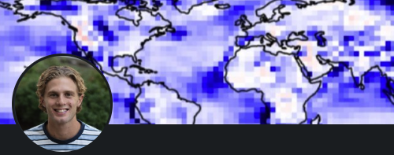
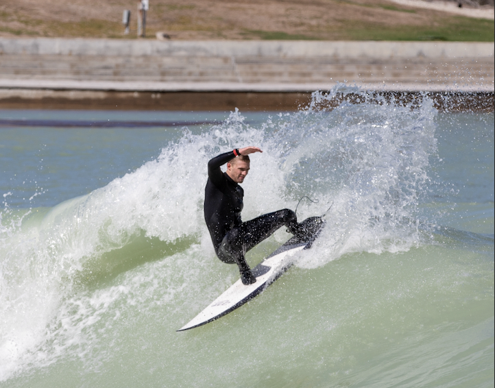

How the Forecasts Work
Each pool is modelled as a well-mixed body of water whose temperature evolves hour by hour based on the net energy exchanged with its surroundings. At every time step the model asks: how much heat is the pool gaining or losing right now, and how does that change the water temperature?
The five heat-flux terms in the numerator represent every meaningful energy pathway between the pool and its environment:
- Solar radiation - shortwave sunlight absorbed at the water surface
- Longwave radiation - infrared exchange between the sky and the pool
- Convection - sensible heat carried by wind across the surface
- Evaporation - latent heat lost as water evaporates (almost always a cooling term)
- Ground conduction - slow heat flow through the pool floor into the earth below
Weather inputs such as air temperature, humidity, wind speed, and solar irradiance are pulled daily from public APIs and fed into the model as forcing data, giving a site-specific multi-day temperature forecast for each pool.
Data Sources
Weather and solar forcing data are fetched automatically once per day from free public APIs:
- NWS API - weather.gov - Hourly air temperature, relative humidity, wind speed, and wind direction forecasts for each pool location.
- Open-Meteo API - open-meteo.com - Daily total shortwave solar radiation (MJ/m²/day).
All retrieved data is stored in a local SQLite database for knowledge of the previous state estimate and used as WAVE-FEST's initial condition on subsequent runs. Retrieving NWS data daily acts as a pseudo data assimilation step, updating the model with the latest observations.
Wetsuit Recommendation Guide
Suit recommendations are assigned based on forecasted pool water temperature:
| Water Temp (°F) | Recommended Suit | Notes |
|---|---|---|
| ≥ 75°F | 🩳 Boardshorts | Warm water - no thermal protection needed |
| 69 – 74°F | 👕 Top / Shorty | Light spring suit or rash guard |
| 63 – 68°F | 🩱 2mm Springsuit / 3/2 Full Suit | Moderate thermal protection |
| 58 – 62°F | 🥶 4/3 Full Suit | Cool water - full suit recommended |
| 52 – 57°F | 🥶❄️ 4/3 Full Suit + Booties | Cold water - add booties for foot warmth |
| < 52°F | 🧊 5/4 Full Suit + Hood + Booties | Very cold - maximum insulation required |
Motivation
I built this site to give surfers accurate 7-day water temperature forecasts and wind ratings so they can bring the right equipment everytime.
Water temperature in wave pools roughly tracks the ambient air temperature, but not quick enough for it to be a reliable indicator. It's driven by a number of atmospheric physical processes, such as solar radiation, wind, evaporative cooling, and many more. Calculating and bookkeeping these processes is the perfect task for a remote machine.
About the Creator
I'm Dylan Elliott, Data Analyst II at SeekOps working on drone-based methane detection science and engineering projects (M.S. Atmospheric Science, Texas A&M). I build projects at the intersection of data science, physics modelling, and real-world problems. Outside of work, I enjoy surfing and building personal coding projects like this one.
What I Do
Atmospheric Science
ML for weather prediction and data assimilation.
Emissions Detection
Data science for drone-based methane sensing.
Hydrology
Real-time flood risk and water monitoring tools.
Pool Temperature Modelling
Physics-based 7-day thermal forecasts.
Contact
Dylan Elliott
📧 Email: dylanelliott@tamu.edu
🌐 Website: dylanelliotttamu.github.io
Have a question about the model, a bug to report, or want to suggest a new wave pool location? Reach out - I'd love to hear from you. You can also leave a note on the Feedback & Subscribe page.
Thank you for visiting Wave Pool Weather!
Photos

